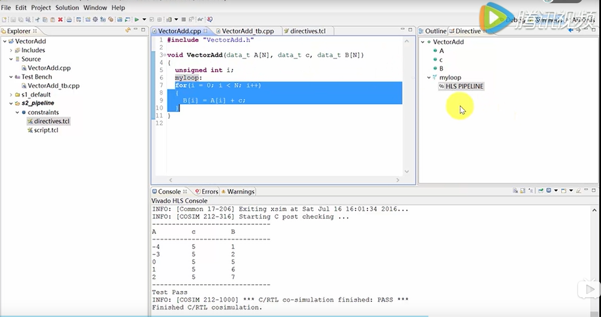

VivadoHLS的设计流程（介绍）
传统的RTL设计流程：

如果采用传统的RTL设计流程，就需要用硬件描述语言比如VHDL、Verilog或者System Verilog描述算法以及相应的Test Bench，然后执行行为级仿真（RTL Simulation），这个过程是一个迭代的过程，以验证算法的正确性，然后再执行综合（Synthesis）和实现（Implementation），在这个阶段要实现设计的收敛（Design Closure），要从Latency、Timing和Resource三个角度进行考察，最后进行系统级的全面的测试，这也是一个迭代的过程。


高层综合（HLS）的设计流程
而在高层综合（HLS）的设计流程中，我们就会站在抽象度更高的C/C++级别描述我们的算法以及Test Bench，描述我们的仿真（C Simulation），这个过程也是一个迭代的过程，然后通过高级综合工具（HLS），帮助我们完成C/C++到RTL的转换，这个过程被称为C综合（C Synthesis），在这个阶段就要考虑到设计收敛，从Latency、Timing和Resource三个角度进行考察，后续流程跟传统的RTL流程一致，也就是包括RTL综合（RTL Synthesis）、实现（Implementation），也要进行系统级的全面的测试，这个过程也是一个迭代的过程。


结合Vivado HLS，可以来看一下，我们需要用C/C++描述算法以及Test Bench，同时还要准备好相应的Constraints/Directives，这就构成了Vivado HLS的设计输入，Directives并不需要手工输入完成，Vivado HLS提供了一个图形用户界面帮助我们完成这个任务，Vivado HLS还提供了一些C Library，包括Math、Video、DSP和Linear alaebra帮助我们加速C算法的描述，Vivado HLS的输出是VHDL/Verilog，但是在工程中不会直接拿这个代码去使用，Vivado HLS会帮助我们把他封装成一个IP（Intellectual Property），这样我们就可以把IP添加到Vivado的IP Catalog中使用，可以在Vivado的IP Intergrater中使用，或者在Vivado的RTL工程中通过实例化IP的方式使用，这跟Vivado提出的以IP为核心的设计理念是一致的，此外，Vivado HLS的输出结果也可以导入到sisin（误）中，以模块化的方式使用，这也是一种很常用的方式。


这个流程进一步细化，具体流程如上图所示，先准备好source code和test bench，然后添加source code，添加test bench，C的仿真，C的综合，在C综合的需要添加Directives，然后进行C/RTL的协同仿真，最后导出RTL结果。
在这个过程中特别需要强调的一点是，C Test Bench对我们整个流程而言是非常重要的文件，这里C Test Bench是一个Self-checking mode（自我检查模式），本身包含真实的结果，用于和仿真的结果作对比，以验证仿真结果是否正确，此外，C Test Bench还用于自动生成RTL Test Bench，在协同仿真（CoSimulaion）阶段，可以在输出中看到Generating RTL test bench …的输出信息，

结合Vivado HLS的菜单，再看一下流程：

结合Vivado HLS的菜单可以看一下流程：
第一步，做C仿真
第二步，做C综合
第三步，做C/RTL协同仿真
第四步，导出RTL
完成C综合之后，可以打开C综合的报告，去查看相应的性能评估，资源利用率的评估，以及接口的信息，做C/RTL协同仿真后，还可以查看RTL的仿真波形。

每一步都会生成相应的文件夹
每一步都是根据前面所讲的顺序去执行的
C Test Bench对Vivado HLS来说是至关重要的
综合报告可以帮我们分析时序、资源利用率，综合后的性能等等
波形查看器提供了一个很直观的方式帮我们查看输入输出端口之间的时序关系
Vivado HLS中的Solutions

解决方案：
一个工程可以有多个不同的解决方案
每一个解决方案都有他自己的directives
这些directives是用来优化C综合的
Directive可以写在source file里，也可以写在directive file里，推荐写在directive file里

这些solution之间有什么区别呢，从前边我们就可以看到，每个solution都有自己的directive，而这些directive的目的就是去优化C的综合，所以说不同的Solution对应不同的directive，以便用来查看不同的directive对C综合的效能的影响，所以Vivado HLS为我们提供了一个很方便的创建solution的按钮，帮助我们比较不同solution之间的结果
波形查看器

波形查看器可以帮助我们很方便的查看RTL的仿真结果

使用方式：
在C/RTL Simulation中选择Vivado Simulation或者Auto
Dump Trace选择port或者all
点击OK
然后就可以点开波形查看器

在波形查看器中，预先对Block-level IO、C inputs和C outputs做了分组，以便能快速的查看相应的端口和信号。

Vivado HLS支持C，C++和System C
强烈建议对每一个C综合的设计都创建相应的C Test Bench
为了达到最好的C综合的结果，应该去创建多个solution，以用来查看这些solution对C综合效能的影响
Vivado HLS提供了直观的方式来查看协同仿真（CoSimulation）的结果
Vivado HLS对于算法的开发起到了很大的加速作用
结论：好的C Coding Style + 好的 Directives = 好的、最佳的结果
VIVADO HLS设计流程（实例）

设计输入包括：Test Bench、C/C++ Source Code、Directives
设计输出包括：IP可以放到IP Catalog中、DCP（就是RTL代码综合后的网表文件）、SysGen（我们可以把仿真后的结果导入到SyaGen中使用）

Test Bench设计的重要性：第一，用于验证C算法功能的正确性，第二，在C/RTL Cosimulation（C/RTL协同仿真）过程中用于生成RTL验证的Test Bench

对于VIVADO HLS，只有一个顶层函数用于综合，
函数下面的子函数也是可以被综合的
通常情况下，子函数被综合后也有相应的VHDL或者Verilog代码，而且跟C语言描述的代码结构一致，但是也有例外，比如如果子函数所需要的逻辑量很小，或者算法功能很简单，综合时就会输出一个信息，Inlining function，就会只有一个顶层的VHDL架构，但是也可以通过directive把Inline关掉。
不可以被综合的情况：动态内存分配和涉及到操作系统层面的一些操作。
看一个Demo
1 | // 头文件VectorAdd.h |
1 |
|
1 | //test Bench |
Test Bench中最终结果，错误的个数大于0，返回1，没有错误返回0。
创建工程

项目名字可以跟函数名字不一致，然要指定用于综合的顶层函数的名字：
然后再加test bench：

然后创建一个Solution，选板子，Uncertainty先不用管：
这就创建好了一个Vivado HLS工程
执行C的仿真：
仿真结束会给出仿真结果，可以看到Test Pass，没有问题。
然后执行C综合，综合结束之后会自动打开综合报告，切换到Outline，可以看相应的Performance，也可以看Utilization：
在左边栏Solution文件夹的syn文件夹中有相应的report文件夹和verilog和vhdl文件夹，代码可读性不好。
接下来选择C/RTL的协同仿真：
然后会显示协同仿真的结果

然后查看波形图
重新创建一个Solution，加directive，%号开头表示directive放在独立的文件里，#开头表示directive放在源代码文件里

综合完成后可以跟第一个solution综合的结果进行对比，这里只是做了pipeline，就可以看到latency和Interval都减小了
Directive：

可以写在单独的Directive文件里，此时可以在directive的面板下看到每个directive前面都有个“%”百分号

也可以写在C Source file里面，此时directive面板里面会以“#”＃号标记。
两种方式对比：
第一，如果是在单独的directive文件中，每个directive是一个tcl命令：
优点：每个solution都有自己独立的directive；
如果这个solution需要重新综合，只有这个solution下面的directive会起到作用；
缺点：如果需要把C source file给第三方工具，则directive的tcl文件也要被包含在其中；
第二，directive在C source file中以pragma形式：
优点：给到第三方工具时，只用source file就能重现结果； 缺点：如果solution需要重新综合，由于directive写在source file里，这时候所有的directive都会被重新执行。

第一，最好在源代码中为每一个for循环创建一个标签，以便于设置directive；
第二，推荐在directive文件中存储directives；
第三，关于Test Bench的返回值，如果仿真通过（结果正确）就返回0，如果仿真不通过（结果错误）就返回1；
第四，通常情况下，生成的RTL代码的层次和原始的C函数的层次是一致的。